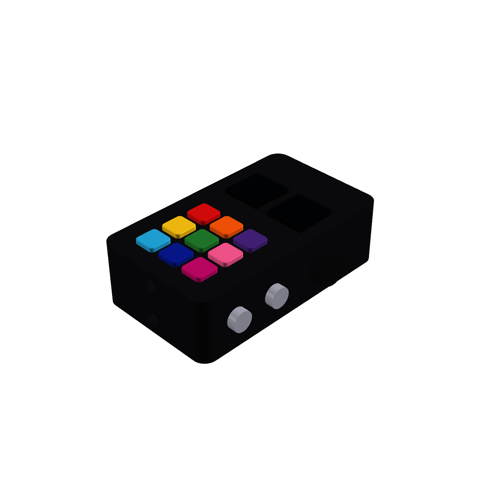

¿Que es TOKI?
Por 5 M.U.D
TOKI es un proyecto escolar grupal de la Secundaria 724 "Presidente de la Nación Arturo Umberto Illía", que busca crear un dispositivo de inclusión para personas con dificultades del habla o que padecen algún trastorno del espectro autista, y que necesiten comunicarse dentro de un ambiente determinado únicamente con su adulto de confianza. Además, desarrollamos una aplicación que vincula el teléfono del adulto con el dispositivo del usuario, para que las alertas lleguen directamente a su celular y se lleve un registro de las interacciones, con el objetivo de mejorar la experiencia y adaptarla a las necesidades de cada persona.
A continuacion una imagen del prototipo
